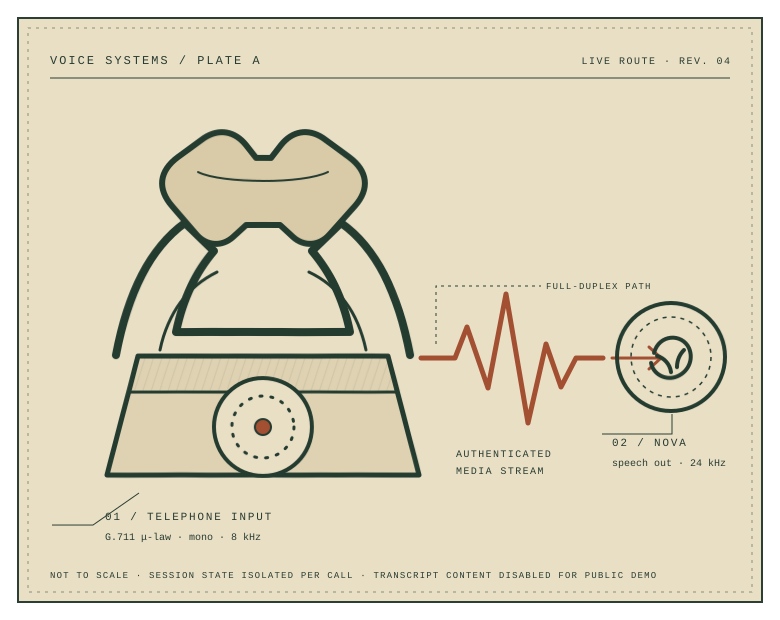

Call the system from any phone.
+1 (267) 573‑8471Four configured agents. Five-minute maximum. Nova speaks first in the selected voice.
Call the demo
Twilio Media Streams × Amazon Nova 2 Sonic
Call Live DemoThis project is a working real-time voice system, not a recorded product tour. Call the public number, select a configured agent, and speak naturally. The phone audio is authenticated, converted, streamed to Nova, and returned to the caller in real time.
One isolated session owns the resamplers, bounded queues, model stream, lifecycle, persistence, and telemetry for each call. Personas are versioned configuration rather than separate applications.
Four configured agents. Five-minute maximum. Nova speaks first in the selected voice.
Call the demoOne runtime; four versioned prompt-and-voice records loaded at call time.
| Key | Configured agent | Field of use | Status |
|---|---|---|---|
| 1 | Care Coordinator |
Appointment questions, follow-up tasks, and general care navigation. |
READY |
| 2 | Financial Services Assistant |
General financial concepts and service workflows—without account access. |
READY |
| 3 | Travel Concierge |
Practical itineraries shaped by destination, timing, and preferences. |
READY |
| 4 | History Guide |
People, places, and events with concise, evidence-aware context. |
READY |
Blocking storage and telemetry work stay off the per-frame loop. Every mutable audio boundary belongs to one call session.
Complete architecture notes ↗Stateful μ-law/PCM conversion and bidirectional streaming without file containers.
Exact-URL signature checks at Twilio webhook and WebSocket boundaries.
Prompts and voices are configured in DynamoDB and snapshotted per call.
Backpressure, queue limits, retries, and idempotent terminal cleanup.
Logs omit phone numbers, raw audio, prompts, and transcript text.
Caller rate, global concurrency, duration, and rolling budget limits.
On-demand persistence with deterministic outcomes and retention controls.
192 tests cover protocol drift, audio, failure paths, and infrastructure contracts.
Python / FastAPI / Amazon Bedrock / Nova 2 Sonic / Twilio / DynamoDB / CloudWatch / ECS Fargate / CloudFront